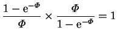
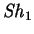
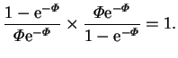

Next: The vertical pressure gradient
Up: The fully developed solution
Previous: The fully developed solution
Contents
Mass and energy fluxes at the vertical walls
In the narrow cavity limit, sufficiently far from the
horizontal surfaces, the dimensionless mass transfer rates,
at the hot and cold walls are obtained by substituting the horizontal
velocity (4.23) into (2.62)
or the mass fraction field (4.24) into (2.63)
|
 |
 |
(4.40) |
|  |
|
 |
(4.41) |
The two methods of calculating the mass transfer rate--from the transpiration
velocity or the mass fraction gradient--are in agreement, as expected.
That the Sherwood
numbers at the hot and cold walls are equal means that the
rates of evaporation and condensation are equal, so that no net mass enters
the cavity at any level where the fully developed solution applies.
The Nusselt number is also a constant
(independent of position on the wall, and the same for each wall) but
does depend on a fixed combination of  and
and  .
It is given by equations (2.66) and
(4.26) as
.
It is given by equations (2.66) and
(4.26) as
Next: The vertical pressure gradient
Up: The fully developed solution
Previous: The fully developed solution
Contents
Geordie McBain
2001-01-27